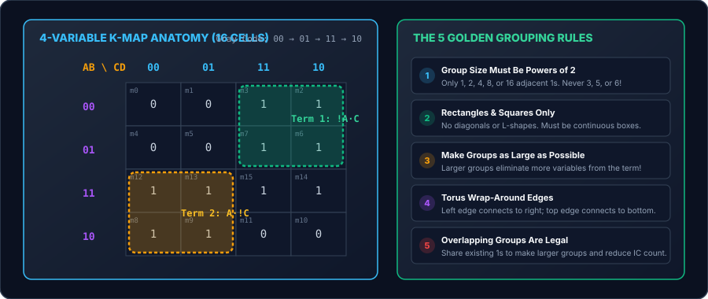
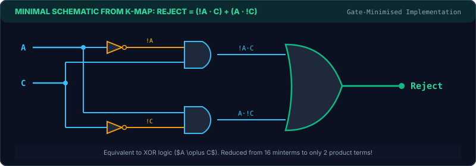

Karnaugh Maps: “Find the Shortest Route”
Harness 2D graphical minimization and Gray code geometry to design the lowest gate-count control logic for multi-sensor industrial systems.
- Construct & Populate K-Maps: Correctly translate truth tables into 2, 3, and 4-variable Gray code grids.
- Apply the 5 Golden Grouping Rules: Form valid powers-of-two groups with edge wrap-around.
- Derive Minimal SOP Expressions: Cancel changing variables to identify essential prime implicants.
- Gate Count Challenge: Implement and verify the minimal circuit on Multisim and breadboard.
“Apex Robotics is commissioning an automated packaging line with 4 optical quality-control sensors ($A, B, C, D$). The raw truth table requires a massive 12-gate logic matrix. Find the shortest route from sensors to reject actuator using a 4-variable K-map!”
Engineering Toolbox: Prior Recall
In Boolean algebra, what is the evaluated result of factoring out a term such that $(X + \overline{X})$ appears inside the expression?
Which product term (minterm) corresponds to row $A=1, B=0, C=1, D=0$ in a 4-variable truth table?
A Karnaugh Map is simply a graphical rearrangement of a truth table where adjacent squares differ by exactly ONE binary digit. When two adjacent squares both contain a 1, that changing variable immediately drops out ($X + \overline{X} = 1$), eliminating manual algebraic factoring completely!
Video Masterclass: Introduction to Karnaugh Maps
With 3, 4, or 5 variables, finding which terms can factor together requires trial and error. K-maps make every possible factoring opportunity visible as adjacent geometric rectangles.
Standard binary counts $00 \to 01 \to 10 \to 11$. But Gray code uses $00 \to 01 \to 11 \to 10$. This ensures that consecutive rows and columns change by only 1 bit at a time!
Groups must contain $1, 2, 4, 8,$ or $16$ cells. A group of 2 eliminates 1 variable; a group of 4 eliminates 2 variables; a group of 8 eliminates 3 variables!
3. What is a Karnaugh Map (K-Map)?
Instead of manipulating algebraic laws, we copy the $1$s from a truth table into a grid (2-var = $2\times 2$, 3-var = $2\times 4$, 4-var = $4\times 4$). Look at this 3-input example:
| A | B | C | Output |
|---|---|---|---|
| 0 | 0 | 0 | 0 |
| 0 | 0 | 1 | 1 |
| 0 | 1 | 0 | 0 |
| 0 | 1 | 1 | 1 |
| 1 | 0 | 0 | 0 |
| 1 | 0 | 1 | 1 |
| 1 | 1 | 0 | 1 |
| 1 | 1 | 1 | 1 |
| A \ BC | 00 | 01 | 11 | 10 |
|---|---|---|---|---|
| 0 | 0 | 1 | 1 | 0 |
| 1 | 0 | 1 | 1 | 1 |
01 & 11. Here $A$ changes, $B$ changes, and only $C=1$ stays constant → Term: $C$.Step 2 (Amber Pair of 2): Group the remaining $1$ at $(A=1, BC=10)$ with its left neighbour $(A=1, BC=11)$. $C$ changes, while $A=1, B=1$ stay constant → Term: $A \cdot B$.
Step 3 (Combine with OR): $$\text{Output} = C + (A \cdot B)$$
K-Map Anatomy & Gray Code Structure
Notice what happens when counting from 1 to 2 in normal binary vs Gray code:
001:
012:
10 (2 bits change!)3:
11
001:
012:
11 (Only 1 bit changes!)3:
10 (Only 1 bit changes!)

The 5 Golden Rules of K-Map Grouping
You can NEVER group 3, 5, 6, or 7 cells! Groups must be exactly $1, 2, 4, 8,$ or $16$ cells.
No diagonal lines, L-shapes, or triangular groups. Groups must form continuous rectangular blocks.
Always look for octets (8) first, then quads (4), then pairs (2). Larger groups eliminate more input variables!
The map is a torus (donut). The far-left column is adjacent to the far-right column; the top row is adjacent to the bottom row!
You can include a cell in multiple groups if it helps make another group larger. (Remember: $1 + 1 = 1$ in Boolean logic!).
Every single Logic 1 must be covered by at least one group. But avoid redundant groups where every 1 is already covered by larger groups!
The Workplace Challenge: 4-Sensor Sorter
- A: Height Defect ($1=\text{Overheight}$) • B: Weight ($1=\text{Underweight}$)
- C: Metal Detected ($1=\text{Metal}$) • D: Barcode ($1=\text{Valid}$)
• Height defect WITHOUT metal ($A \cdot \overline{C}$), OR
• Metal detected WITHOUT height defect ($\overline{A} \cdot C$).
A minterm is one row of a truth table where the output is 1, written by ANDing all inputs together: use the normal letter for $1$ and the barred letter for $0$.
Example: Row $m_2$ ($0010_2 = 2$: $A=0, B=0, C=1, D=0$) → $\overline{A}\cdot\overline{B}\cdot C\cdot\overline{D}$.
$= \overline{A}\overline{B}C\overline{D} + \overline{A}\overline{B}CD + \overline{A}BC\overline{D} + \overline{A}BCD + A\overline{B}\overline{C}\overline{D} + A\overline{B}\overline{C}D + AB\overline{C}\overline{D} + AB\overline{C}D$
| m | A | B | C | D | Reject |
|---|---|---|---|---|---|
| m0 | 0 | 0 | 0 | 0 | 0 |
| m1 | 0 | 0 | 0 | 1 | 0 |
| m2 | 0 | 0 | 1 | 0 | 1 |
| m3 | 0 | 0 | 1 | 1 | 1 |
| m4 | 0 | 1 | 0 | 0 | 0 |
| m5 | 0 | 1 | 0 | 1 | 0 |
| m6 | 0 | 1 | 1 | 0 | 1 |
| m7 | 0 | 1 | 1 | 1 | 1 |
| m8 | 1 | 0 | 0 | 0 | 1 |
| m9 | 1 | 0 | 0 | 1 | 1 |
| m10 | 1 | 0 | 1 | 0 | 0 |
| m11 | 1 | 0 | 1 | 1 | 0 |
| m12 | 1 | 1 | 0 | 0 | 1 |
| m13 | 1 | 1 | 0 | 1 | 1 |
| m14 | 1 | 1 | 1 | 0 | 0 |
| m15 | 1 | 1 | 1 | 1 | 0 |
Interactive 4-Variable K-Map Solver
| AB \ CD | 00 | 01 | 11 | 10 |
|---|---|---|---|---|
| 00 | m00 |
m10 |
m30 |
m20 |
| 01 | m40 |
m50 |
m70 |
m60 |
| 11 | m120 |
m130 |
m150 |
m140 |
| 10 | m80 |
m90 |
m110 |
m100 |
The Gate Count Challenge: Before vs. After

| Parameter | Un-Simplified | K-Map Minimal |
|---|---|---|
| Logic Gates | 13 gates | 3 gates (-77%) |
| IC Packages | 4–5 ICs | 1–2 ICs |
| Current Draw | ~85 mA | ~22 mA (-74%) |
| Propagation Delay | ~35 ns | ~12 ns (-65%) |
Can be built using 1x 74LS04 (NOT), 1x 74LS08 (AND), 1x 74LS32 (OR) or a single 74LS86 (Quad XOR Gate)!
Tinkercad / Multisim Simulation: Build & Compare
- Setup 4 Digital Switches: Place 4 SPDT or DIP switches for inputs $A, B, C, D$ ($0\,\text{V}$ / $+5\,\text{V}$).
- Build & Compare: Compare the un-simplified 13-gate minterm design against the minimal K-map logic ($\overline{A}\cdot C + A\cdot\overline{C}$ using
74LS04,74LS08,74LS32— or a single74LS86). - Attach Output Probe: Connect a Green LED probe (via $330\,\Omega$ resistor) to the final output ($\text{Reject}$).
- Test Boundary Conditions: Verify that toggling inputs $B$ and $D$ has zero effect on the output!
Physical Breadboard Build
Assemble your circuit components on the breadboard.
Using your 74LS04 (Inverter), 74LS08 (AND), and 74LS32 (OR) ICs, wire and test the minimal packaging reject controller:
74LS04 (Hex Inverter)
IC 2: 74LS08 (Quad AND)
IC 3: 74LS32 (Quad OR)
Resistor: $330\,\Omega$
Output: Green Reject LED
74LS86 Quad 2-Input Exclusive-OR (XOR) IC!
Circuit Fault-Finding & Diagnostics
Measure $+5\,\text{V}$ directly between Pin 14 and Pin 7 of each IC. Never assume breadboard power rails connect across the center split!
Probe Pin 2 of the 74LS04 with your DMM when Input $A=0$. It should read $+3.4\,\text{V}$ to $+5.0\,\text{V}$ (Logic 1).
Remember that $B$ and $D$ do not enter the minimal circuit. Tie any unused TTL gate inputs to $0\,\text{V}$ Ground to stop noise pickup.
Never connect an LED directly between a TTL output and Ground without a $330\,\Omega$ resistor, or you will overload the output stage.
Check that all IC orientation notches point LEFT. Plugging in an IC backwards applies $+5\,\text{V}$ to Ground and destroys the chip!
Check all 4 operational states: $A=0, C=0 \implies 0$; $A=0, C=1 \implies 1$; $A=1, C=0 \implies 1$; $A=1, C=1 \implies 0$.
Engineer Exit Ticket: Week 4
How many input variables are eliminated when grouping a block of 4 adjacent 1s (a quad) in a 4-variable K-map?
Can the 4 extreme outer corners of a 4-variable K-map ($m_0, m_2, m_8, m_{10}$) be grouped together into a single term?
Complete your documentation with the 16-row truth table, annotated 4-variable K-map showing groupings, minimal SOP equation, Multisim simulation printout, and bench photo.
Practice Questions: K-Map Grouping & Minimisation
What is the correct 2-bit Gray code order for K-map columns?
Which of these is NOT a valid K-map group size?
In a 4-variable K-map, how many variables remain in the product term of an 8-cell octet?
In a 3-var K-map ($A \setminus BC$), a pair covers $(A=1, BC=00)$ and $(A=1, BC=10)$. What is its term?
Why is it helpful to overlap a $1$ that is already in another group?
In a 2-var K-map, $1$s appear at $(0,1)$, $(1,0)$, and $(1,1)$. What is the minimal expression?